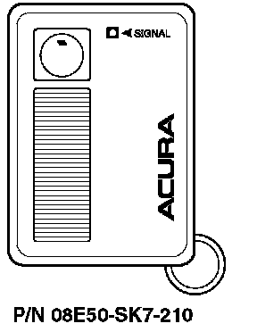
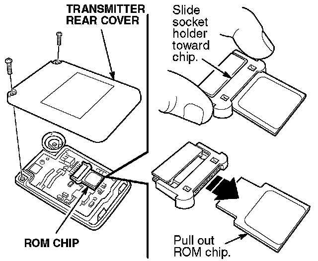
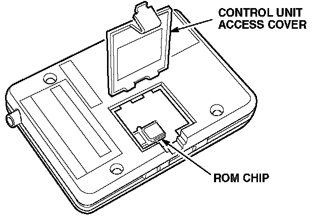

1990-93 Integra
1990-93 Integra with dealer-installed security system
Programming the Transmitter
NOTE:
This system uses ROM chips that match the transmitter to the security system control unit. When replacing a lost or stolen transmitter, you need to use the three ROM chips (provided with the new transmitter) to match the old transmitter with the new transmitter and the control unit.
1. Remove the rear cover from the old transmitter and the new one.

2. Remove the ROM chip from the old transmitter by sliding its socket holder toward the ROM chip.
3. Insert a new ROM chip into the socket holder, then slide the socket holder toward the socket to lock the chip in place.
4. Repeat step 3 to install a ROM chip into the new transmitter.
5. Reinstall the rear covers on the transmitters.
6. Remove the security system control unit from under the driver's seat.

7. Open the access cover on the control unit, and replace the ROM chip. (Use the same procedure as in steps 2 and 3.)
8. Press the reset button next to the ROM chip.
9. Close the access cover, and reinstall the control unit.
If you are replacing a damaged transmitter, don't replace the ROM chips in the transmitters and the control unit; just remove the chip from the old transmitter and install it in the new one.
Ordering a Transmitter
Transmitters can be ordered only by authorized Acura dealers. Order them from American Honda using normal parts ordering procedures.
If your customer wants to add a third transmitter to the system, you need to order a four ROM chip set directly from Alpine Electronics of America. The Alpine part number for the four ROM chip set is 8319. This ROM chip set does not come with a transmitter. Order the additional transmitter from American Honda.
If you have questions about how to order a four ROM chip set, call Alpine's parts department at (800) 421-2284, extension 8885.
Batteries for the Transmitter
The battery number is CR2025. Each transmitter uses one battery.